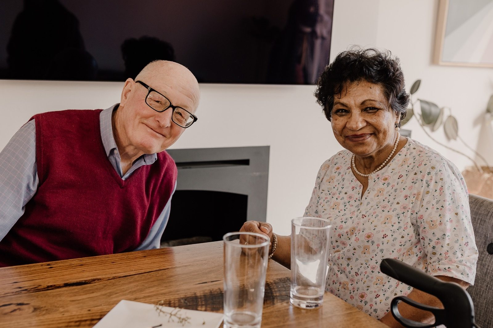
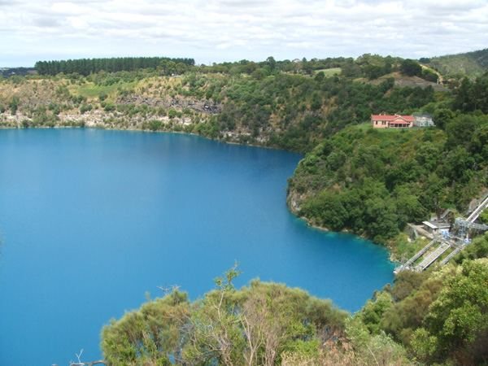
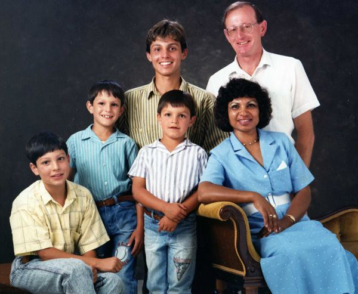

Tarpeena, South Australia
Malcolm & Nuran
Stories from the country, Nuran's favourite recipes, the greyhounds and the family photo album.

Tarpeena Tales
40 stories of cycling, home brew, darts, dogs and family, 2005 onwards.

Great Discoveries
AUSTRALIA was discovered, but not named, by Malcolm Keenan on the 22 nd of February 1965. This was after a tortuous voyage on a Comet…..a plane which had…

Nuran's Recipes
58 family favourites, from curries and roti to sticky date pudding.

The Greyhounds
Zeenat and Keen One – replays of the winning runs.

Photos
26 albums of grandkids, gatherings and trips.